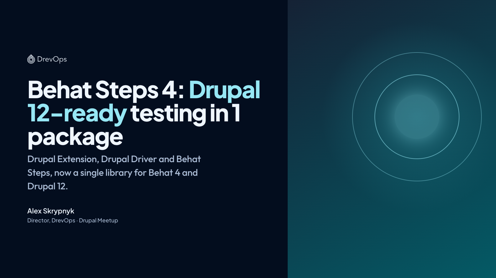
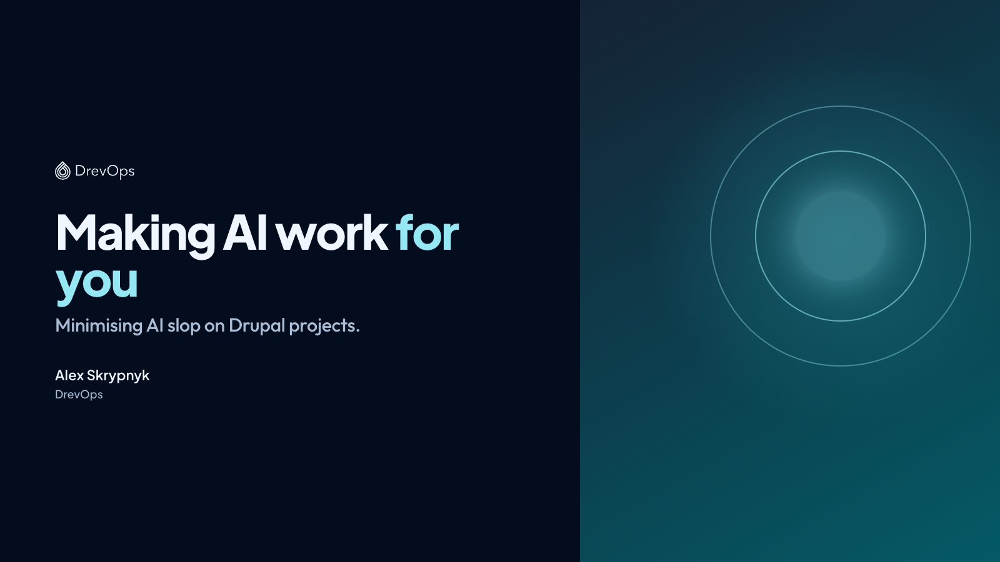
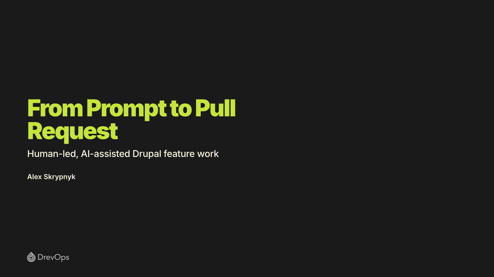
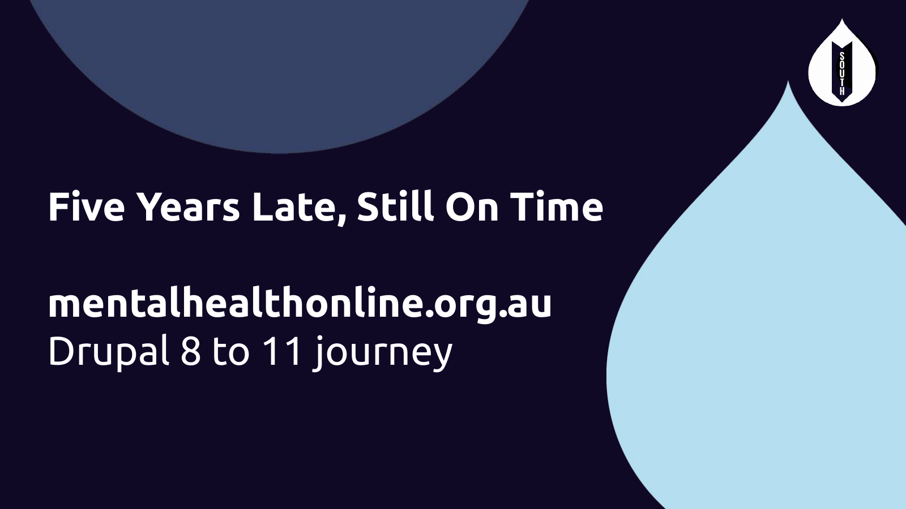
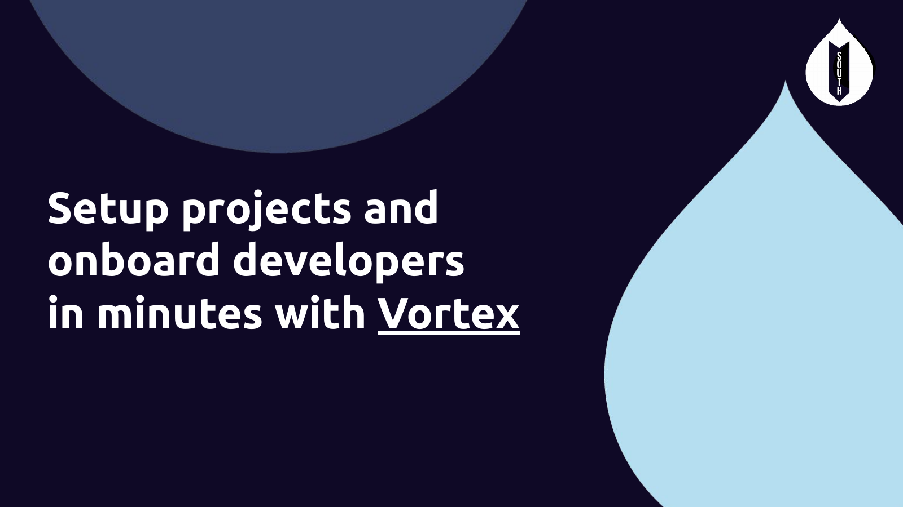
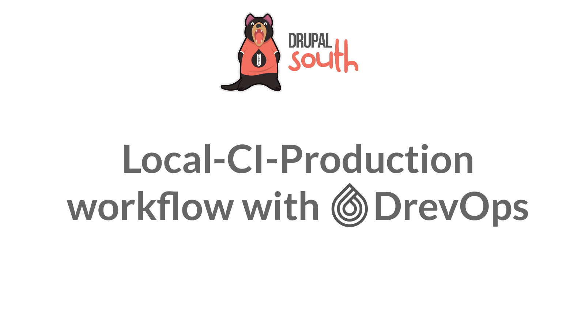

Slides
Slide decks from talks by Alex Skrypnyk.

Behat Steps 4: Drupal 12-ready testing in 1 package

Making AI work for you: Minimising AI slop on Drupal projects

From Prompt to Pull Request

Five Years Late, Still On Time: mentalhealthonline.org.au Drupal 8 to 11 journey

Setup projects and onboard developers in minutes with Vortex
